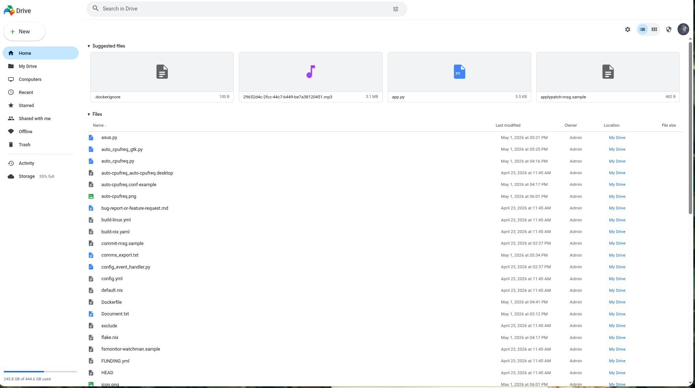
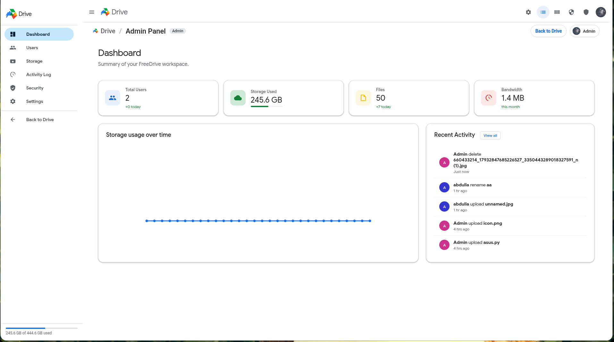

Encrypted File Pipeline
Files are encrypted before storage, and authorized browser sessions decrypt content locally for viewing and editing workflows.
FreeDrive gives you the familiar Google Drive experience — the same clean UI, file management, and sharing — but running entirely on your own server as a single 18MB binary.
FreeDrive replicates the clean, intuitive Google Drive interface you already know, but keeps everything on your infrastructure.
If you've used Google Drive, you already know FreeDrive. Same clean layout, same file grid, same intuitive navigation — no learning curve. We built the UI to feel like home.
One ~18MB Go binary. No Docker, no PHP, no MySQL, no Apache, no config files. Download it, run it, you're live. The entire app — backend, frontend, database — in one file.
Your files never leave your server. No Google scanning your documents, no Dropbox sharing with "partners." You control every byte of your data.
FreeDrive writes directly to your server storage. Scale from a single SSD to large arrays without vendor quotas or forced pricing tiers.
Share files with specific users or generate public links — just like Google Drive's sharing modal. Copy link, send, done.
Preview and edit text files, images, PDFs, JSON, audio, and video directly in the browser. Encrypted blobs are decrypted in-browser for authorized sessions.
Full admin panel at /admin — invite users by email, assign roles and quotas, configure SMTP, review activity logs, manage security controls, and run backups.
Full source code on GitHub. Fork it, modify it, contribute to it. No vendor lock-in, no surprise pricing changes, no "we're discontinuing this product" emails.
Real product screens from the running app, including user workspace and admin settings.


Security posture is explicit: encrypted file flows in browser, JWT-based auth, and self-hosted control boundaries.
Files are encrypted before storage, and authorized browser sessions decrypt content locally for viewing and editing workflows.
Session handling uses JWT access tokens with refresh token flow for controlled re-auth and token rotation.
Your identity, storage, logs, and policy stay on your infrastructure, reducing third-party data exposure.
How does FreeDrive compare to the cloud storage solutions you're paying for?
| Feature |
FreeDrive
|
Google Drive | Dropbox | Nextcloud | OneDrive |
|---|---|---|---|---|---|
| Price | Free Forever | $1.99/mo+ | $11.99/mo+ | Free (self-host) | $1.99/mo+ |
| Storage Model | Scalable (your disks) | 15 GB free | 2 GB free | Scalable (self-host) | 5 GB free |
| Self-Hosted | ✓ | ✗ | ✗ | ✓ | ✗ |
| Open Source | ✓ | ✗ | ✗ | ✓ | ✗ |
| Data Privacy | Full Control | Google Scans Files | Limited | Full Control | Microsoft Access |
| Setup | 1 Binary | SaaS | SaaS | Docker+PHP+MySQL | SaaS |
| Dependencies | Zero | — | — | PHP, MySQL, Apache | — |
| External DB Required | No (Embedded SQLite) | Managed by provider | Managed by provider | Yes (MySQL/PostgreSQL) | Managed by provider |
| Typical RAM Footprint | < 50MB idle | N/A (SaaS) | N/A (SaaS) | 500MB+ stack dependent | N/A (SaaS) |
| Binary Size | ~18 MB | N/A | N/A | Multi-service stack | N/A |
| Google Drive UI | ✓ Identical | ✓ Original | ✗ | Different UI | Different UI |
| Built-in Editors | ✓ | ✓ | Limited | ✓ (plugins) | ✓ |
| Admin Panel | ✓ | Workspace only | Business only | ✓ | Admin center |
| Tech Stack | Go + SQLite | Proprietary | Proprietary | PHP + MySQL | Proprietary |
Resource numbers are practical baseline estimates and can vary by workload and deployment setup.
One script downloads, compiles, and sets up FreeDrive as a background service. Or just grab the binary and double-click. Systemd setup requires sudo/root privileges.
# Install FreeDrive on your server
curl -fsSL https://abdullaabdullazade.github.io/freedrive/install.sh \
-o install.sh
chmod +x install.sh
./install.sh
# HTTPS enables browser-side encryptioncurl -fsSL https://abdullaabdullazade.github.io/freedrive/update.sh \
-o update.sh
chmod +x update.sh
./update.shTake control of your files. No subscriptions, no data mining, no limits.